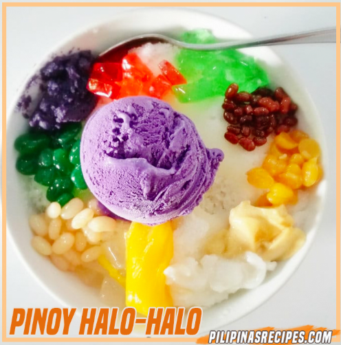
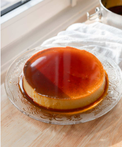
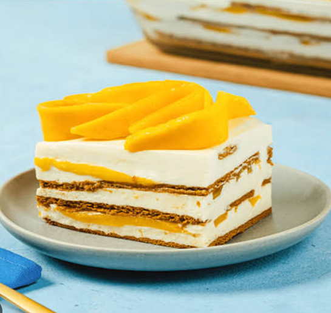
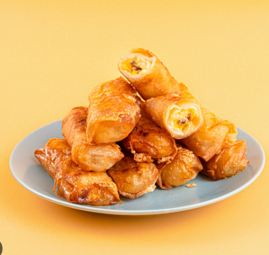
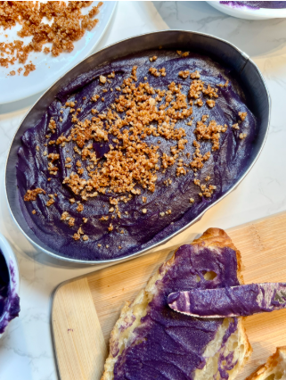

Halo-Halo
A famous cold dessert layered with crushed ice, evaporated milk, sweet beans, fruits, and ube ice cream.

Leche Flan
A rich and creamy caramel custard made from egg yolks, condensed milk, and a delicate caramel syrup topping.

Mango Float
A popular no-bake refrigerator cake made with layers of graham crackers, sweet cream, and ripe Philippine mangoes.

Turon
A beloved street food snack featuring thinly sliced saba bananas and jackfruit wrapped in spring roll wrappers and fried crisp.

Ube Halaya
A traditional purple yam jam cooked with coconut milk, butter, and condensed milk, known for its rich and smooth flavor.